NSF Analytics Report
Combined Learner Data and Dropouts Analysis
Generated: 2026-06-19 13:29:32
Total Learners
Total Dropouts
Dropouts (Last 12 Mo)
Success Stories
Youth Empowerment Conference
The Wentworth Youth Centre buzzed with energy as it hosted the impactful Youth Empowerment Conference. This vital initiative was born from the passionate vision of Nonelwa, one of our dedicated interns, whose desire to effect positive change in Ward 66 truly inspired us. Working hand-in-hand with Councillor Zoe and a committed team of individuals, Nonelwa's dream transformed into a tangible reality, ensuring the conference was a resounding success. Over two dynamic days, the conference provided a crucial platform for the unemployed youth of Ward 66. Various organizations stepped forward, offering invaluable guidance on a multitude of pathways to self-improvement and opportunity.
Attendees gained insights into:
- Acquiring Employment: Practical advice and strategies for job searching.
- Internships & Learnerships: Information on gaining vital work experience.
- Education & Skills Development: Opportunities for further learning and acquiring new, in-demand skills.
The overwhelming participation and positive feedback from the youth underscored the critical need for such initiatives. It was a powerful demonstration of community collaboration, igniting hope and providing concrete steps for a brighter future for the young people of Ward 66. We're incredibly proud of Nonelwa's leadership and the collective effort that made this event possible!


Spotlight on Zanele Mhlongo
We're incredibly proud to shine a spotlight on Zanele Mhlongo, an outstanding intern from our NSF WIL placement programme. Zanele has consistently developed and added immense value to those around her. Her insightful articles, which have graced the pages of various newspapers, stand as a true testament to her exceptional skill and dedication. She has fully integrated into her environment, pushing the boundaries of what it means to be an 'intern'.
"I feel like I'm not expressing my gratitude fully. I would like to take this opportunity to thank you for the chance you have given me. I'm absolutely loving the experience I'm gaining here. One of the highlights is seeing my work featured in prominent publications like Metro Ezasegagasini, Newsflashes and Workplace magazine. These contributions are a testament to the skills I'm developing and the value I'm adding. KEEP UP THE GOOD WORK"
Zanele.


Host Employers
| Rank | Site Name | Learners |
|---|---|---|
| 1 | Ethekwini | 229 |
| 2 | Moses Kotane Institute(MKI) | 33 |
| 3 | Department of Health | 32 |
| 4 | CAO | 30 |
| 5 | Sa Navy | 23 |
| 6 | DUT IT Faculty | 21 |
| 7 | Interflex | 14 |
| 8 | Defy | 13 |
| 9 | National Association of Child Care Workers (NACCW) | 12 |
| 10 | Jems Foundation | 12 |
| 11 | DUT Finance | 12 |
| 12 | Sales Infinity | 9 |
| 13 | Lead HR Consulting | 9 |
| 14 | Finiks Purecare | 8 |
| 15 | Santam | 7 |
| 16 | Forward Slash Projects | 7 |
| 17 | Go Digital SA Foundation | 7 |
| 18 | Zinga Facilities Management | 6 |
| 19 | SWGC | 5 |
| 20 | DUT IT (Shireen) | 5 |
| 21 | eThekwini (Microsoft) | 5 |
| 22 | Projectized | 5 |
| 23 | AIM Capital | 4 |
| 24 | K-Tell Solutions | 4 |
| 25 | Blaek and Hwit | 4 |
| 26 | Anat Foods | 4 |
| 27 | Van Schaik Bookstore | 4 |
| 28 | City of Joburg | 4 |
| 29 | Megazone Radio | 4 |
| 30 | Power House Clothing | 4 |
| 31 | Ethekwini (DUT) | 4 |
| 32 | SDC | 3 |
| 33 | Royal Tyres | 3 |
| 34 | Co Operative Affairs | 3 |
| 35 | Verigreen | 3 |
| 36 | Beauty Zone Group | 3 |
| 37 | Vijay Ori & Associates CC | 3 |
| 38 | Metro Bus | 2 |
| 39 | Department of Education | 2 |
| 40 | Connexionwise Finances | 2 |
| 41 | Lead Development | 2 |
| 42 | PJ Semenale Secondary School | 2 |
| 43 | Vevegan James and Associates | 2 |
| 44 | Durpro | 2 |
| 45 | Precurement | 2 |
| 46 | Aloe Lifestyle Hotel | 2 |
| 47 | Olive Convention Centre | 2 |
| 48 | J.B Marks Primary School | 1 |
| 49 | Charlot Maxeke | 1 |
| 50 | Stratism Solutions | 1 |
| 51 | Department Of Health | 1 |
| 52 | Impact House Ministries (Fourways) | 1 |
| 53 | Emazulwini Production | 1 |
| 54 | Afrocentric | 1 |
| 55 | Leratong Hospital | 1 |
| 56 | Dream Big Stay Humble | 1 |
| 57 | DUT CELT | 1 |
| 58 | Gobizazi ECD Centre | 1 |
| 59 | Isisekelo Training Solutions | 1 |
| 60 | Motherson | 1 |
| 61 | Green Youth Network (GYN) | 1 |
| 62 | Blueprint Accounting SA | 1 |
| 63 | Sukdoe Attorneys | 1 |
| 64 | UKZN | 1 |
| 65 | Quality Training Consulting | 1 |
| 66 | Croxley Education | 1 |
| 67 | Chemin | 1 |
| 68 | DUT Student Housing | 1 |
| 69 | UKZN Press | 1 |
| 70 | Fabrication | 1 |
| 71 | Bonakude | 1 |
| 72 | Amazing Palace Medical Spa & Wellness Centre | 1 |
| 73 | Correctional Services | 1 |
| 74 | Orlando Court | 1 |
| 75 | Olive Convection Centre | 1 |
| 76 | DUT Hotel School | 1 |
Top WIL Learning Programmes
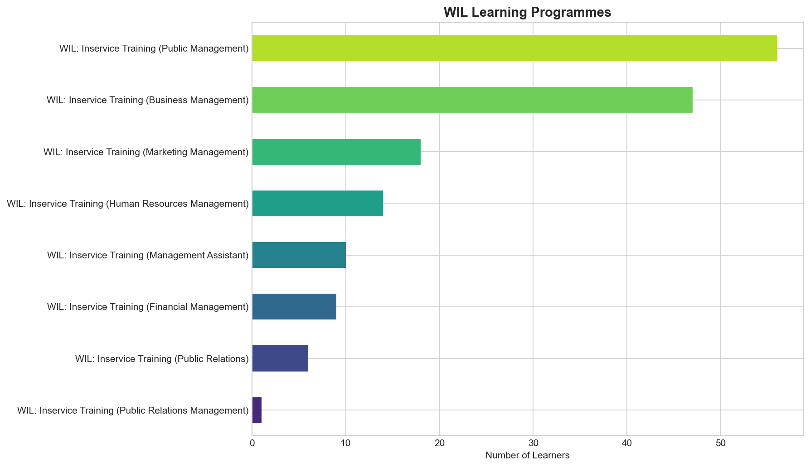
| Rank | Programme | Learners |
|---|---|---|
| 1 | WIL: Inservice Training (Public Management) | 56 |
| 2 | WIL: Inservice Training (Business Management) | 47 |
| 3 | WIL: Inservice Training (Marketing Management) | 18 |
| 4 | WIL: Inservice Training (Human Resources Management) | 14 |
| 5 | WIL: Inservice Training (Management Assistant) | 10 |
| 6 | WIL: Inservice Training (Financial Management) | 9 |
| 7 | WIL: Inservice Training (Public Relations) | 6 |
| 8 | WIL: Inservice Training (Public Relations Management) | 1 |
Top Graduate Learning Programmes
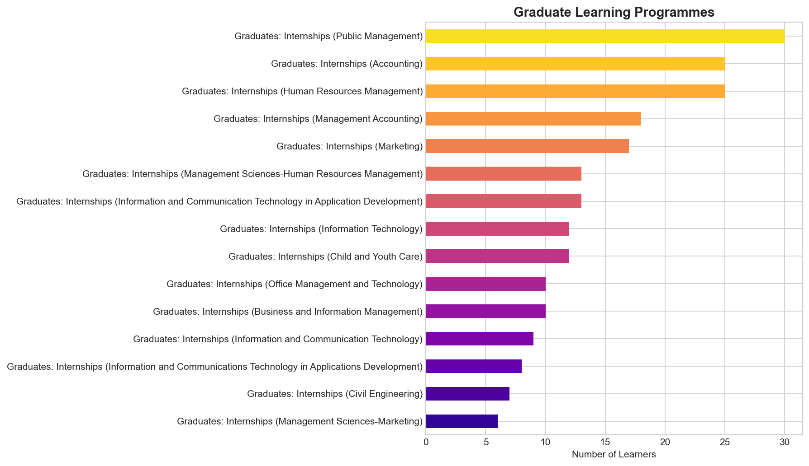
| Rank | Programme | Learners |
|---|---|---|
| 1 | Graduates: Internships (Public Management) | 30 |
| 2 | Graduates: Internships (Human Resources Management) | 25 |
| 3 | Graduates: Internships (Accounting) | 25 |
| 4 | Graduates: Internships (Management Accounting) | 18 |
| 5 | Graduates: Internships (Marketing) | 17 |
| 6 | Graduates: Internships (Information and Communication Technology in Application Development) | 13 |
| 7 | Graduates: Internships (Management Sciences-Human Resources Management) | 13 |
| 8 | Graduates: Internships (Child and Youth Care) | 12 |
| 9 | Graduates: Internships (Information Technology) | 12 |
| 10 | Graduates: Internships (Office Management and Technology) | 10 |
| 11 | Graduates: Internships (Business and Information Management) | 10 |
| 12 | Graduates: Internships (Information and Communication Technology) | 9 |
| 13 | Graduates: Internships (Information and Communications Technology in Applications Development) | 8 |
| 14 | Graduates: Internships (Civil Engineering) | 7 |
| 15 | Graduates: Internships (Management Sciences-Marketing) | 6 |
| 16 | Graduates: Internships (Social Sciences) | 6 |
| 17 | Graduates: Internships (Cost and Management Accounting) | 6 |
| 18 | Graduates: Internships (Business Management) | 6 |
| 19 | Graduates: Internships (Social Work) | 6 |
| 20 | Graduates: Internships (Commerce) | 6 |
| 21 | Graduates: Internships (Business & Information Management) | 6 |
| 22 | Graduates: Internships (Public Administration specialising in local government) | 5 |
| 23 | Graduates: Internships (Information and Communication Technology in Business Analysis) | 5 |
| 24 | Graduates: Internships (Business Administration) | 5 |
| 25 | Graduates: Internships (Hospitality Management) | 5 |
| 26 | Graduates: Internships (Shipping & Logistics) | 4 |
| 27 | Graduates: Internships (Management Sciences-Public Relations and Communication Management) | 4 |
| 28 | Graduates: Internships (Public Relations Management) | 4 |
| 29 | Graduates: Internships (Information Technology-Communication Network) | 4 |
| 30 | Graduates: Internships (Taxation) | 4 |
| 31 | Graduates: Internships (Management Sciences in Operations) | 4 |
| 32 | Graduates: Internships (Information and Communications Technology in Business Analysis) | 4 |
| 33 | Graduates: Internships (Engineering Technology In Electronic Engineering) | 3 |
| 34 | Graduates: Internships (Law) | 3 |
| 35 | Graduates: Internships (Public Administration in Disaster risk management) | 3 |
| 36 | Graduates: Internships (Engineering Technology in Civil Engineering) | 3 |
| 37 | Graduates: Internships (Fashion Design) | 3 |
| 38 | Graduates: Internships (Internal Auditing) | 3 |
| 39 | Graduates: Internships (Electrical Engineering) | 3 |
| 40 | Graduates: Internships (Supply Chain Management) | 3 |
| 41 | Graduates: Internships (Public Administration) | 3 |
| 42 | Graduates: Internships (Journalism) | 3 |
| 43 | Graduates: Internships (Development Studies) | 3 |
| 44 | Graduates: Internships (Sport Management) | 3 |
| 45 | Graduates: Internships (Education in Senior Phase and Further Education and Training Phase Teaching) | 3 |
| 46 | Graduates: Internships (Public Administration specialising in Public Management) | 2 |
| 47 | Graduates: Internships (Management Sciences-Public Relations and Communication) | 2 |
| 48 | Graduates: Internships (Building) | 2 |
| 49 | Graduates: Internships (Management Scieneces- Business Administration) | 2 |
| 50 | Graduates: Internships (Management Sciences-Business Law) | 2 |
| 51 | Graduates: Internships (Information and Communications Technology) | 2 |
| 52 | Graduates: Internships (Information Technology Management) | 2 |
| 53 | Graduates: Internships (Public Relations and Communication Management) | 2 |
| 54 | Graduates: Internships (Analytical Chemistry) | 2 |
| 55 | Graduates: Internships (Management Sciences in Business Administration) | 2 |
| 56 | Graduates: Internships (Management Sciences in Public Relations and Communication Management) | 2 |
| 57 | Graduates: Internships (Public Relations) | 2 |
| 58 | Graduates: Internships (Public Administration in Public Management) | 2 |
| 59 | Graduates: Internships (Hospitality & Catering Services) | 2 |
| 60 | Graduates: Internships (Computer Science and Information Technology) | 2 |
| 61 | Graduates: Internships (Clothing Management) | 1 |
| 62 | Graduates: Internships (Information Technology -Communications Network) | 1 |
| 63 | Graduates: Internships (Human Resource Management Practice) | 1 |
| 64 | Graduates: Internships (Engineering- Civil) | 1 |
| 65 | Graduates: Internships (Economics) | 1 |
| 66 | Graduates: Internships( Public Management and Administration) | 1 |
| 67 | Graduates: Internships (Accountancy) | 1 |
| 68 | Graduates: Internships (Engineering) | 1 |
| 69 | Graduates: Internships (Education) | 1 |
| 70 | Graduates: Internships (Computer Science) | 1 |
| 71 | Graduates: Internships (Marketing & Business Management) | 1 |
| 72 | Graduates: Internships (Administration) | 1 |
| 73 | Graduates: Internships (Hospitality) | 1 |
| 74 | Graduates: Internships (Information Systems and Technology) | 1 |
| 75 | Graduates: Internships (Journalism and Media Studies) | 1 |
| 76 | Graduates: Internships (Computer Science & Statistics) | 1 |
| 77 | Graduates: Internships (Sound Technology) | 1 |
| 78 | Graduates: Internships (Arts) | 1 |
| 79 | Graduates: Internships (Commerce-Industrial Relations) | 1 |
| 80 | Graduates: Internships (Sport Science) | 1 |
| 81 | Graduates: Internships (Nature Conservation) | 1 |
| 82 | Graduates: Internships (Computer Science & Mathematics) | 1 |
| 83 | Graduates: Internships (Art & Design) | 1 |
| 84 | Graduates: Internships (Business Administration- Logistics and Supply Chain Management) | 1 |
| 85 | Graduates: Internships (Science- Mathematics and Statistics) | 1 |
| 86 | Graduates: Internships (Social Sciences-Pyschology) | 1 |
| 87 | Graduates: Internships (Design) | 1 |
| 88 | Graduates: Internships (Public Adiministration-Supply Chain Management) | 1 |
| 89 | Graduates: Internships (Tourism) | 1 |
| 90 | Graduates: Internships (Commerce-Finance & Supply Chain Management) | 1 |
| 91 | Graduates: Internships (Public Administration Management-Supply Chain Management) | 1 |
| 92 | Graduates: Internships (Science in Agriculture) | 1 |
| 93 | Graduates: Internships (Communication Science) | 1 |
| 94 | Graduates: Internships (Marketing Management) | 1 |
| 95 | Graduates: Internships (Arts-Development Studies) | 1 |
| 96 | Graduates: Internships (Management) | 1 |
| 97 | Graduates: Internships (Management Sciences- Operation Management) | 1 |
| 98 | Graduates: Internships (Engineering-Electrical) | 1 |
| 99 | Graduates: Internships (Management Sciences-Business Administration) | 1 |
| 100 | Graduates: Internships (Computer Scienece and Statitistics) | 1 |
| 101 | Graduates: Internships (Policing) | 1 |
| 102 | Graduates: Internships (Public Finance and Accounting) | 1 |
| 103 | Graduates: Internships (Investment Science with Specialisation in Finance) | 1 |
| 104 | Graduates: Internships (Accounting Science) | 1 |
| 105 | Graduates: Internships (Banking and Business Management) | 1 |
| 106 | Graduates: Internships (Community Development) | 1 |
| 107 | Graduates: Internships (Civil Engineering with Specialisation in Construction Management) | 1 |
| 108 | Graduates: Internships (Corporate Communications) | 1 |
| 109 | Graduates: Internships (Ethics and Management) | 1 |
| 110 | Graduates: Internships (Management and Communication Studies) | 1 |
| 111 | Graduates: Internships (Applied Mathematics and Computer Science) | 1 |
| 112 | Graduates: Internships (Engineering Technology in Mechanical Engineering) | 1 |
| 113 | Graduates: Internships (Environmental Health) | 1 |
| 114 | Graduates: Internships (Digital Design) | 1 |
| 115 | Graduates: Internships (Multimedia: Three year integrated Fine Art, Animation and Graphic Design) | 1 |
| 116 | Graduates: Internships (Information Technology in Programming) | 1 |
| 117 | Graduates: Internships (Business Administration in Human Resource Management) | 1 |
| 118 | Graduates: Internships (Library and Information Studies) | 1 |
| 119 | Graduates: Internships (Business Administration with Specialisation in Human Resource Management) | 1 |
| 120 | Graduates: Internships (Intercultural Communication) | 1 |
| 121 | Graduates: Internships (Further Education and Training in Computer Science and Mathematics) | 1 |
| 122 | Graduates: Internships (Management Sciences in Business Law) | 1 |
| 123 | Graduates: Internships (Screen Arts and Technology) | 1 |
| 124 | Graduates: Internships (Administrative Management) | 1 |
| 125 | Graduates: Internships (Civil-Engineering) | 1 |
| 126 | Graduates: Internships (Hotel Management) | 1 |
| 127 | Graduates: Internships (Social Sciences: Marketing and socilogy) | 1 |
| 128 | Graduates: Internships (Commerce: Supply Chain Management) | 1 |
| 129 | Graduates: Internships (Science in Engineering-Civil Engineering) | 1 |
| 130 | Graduates: Internships (Computer and Information Sciences in Application Development) | 1 |
| 131 | Graduates: Internships (Drama) | 1 |
| 132 | Graduates: Internships (Consumer Sciences in Extension & Rural Development) | 1 |
| 133 | Graduates: Internships (Social Sciences: Geography and Environmental Management) | 1 |
| 134 | Graduates: Internships (Logistics and Supply Chain Management) | 1 |
| 135 | Graduates: Internships (Arts - Psychology) | 1 |
| 136 | Graduates: Internships (Business Administration -Brand Building and Management) | 1 |
| 137 | Graduates: Internships (Social Sciences-Housing) | 1 |
| 138 | Graduates: Internships (Child and Youth Development) | 1 |
Top Economic Sectors
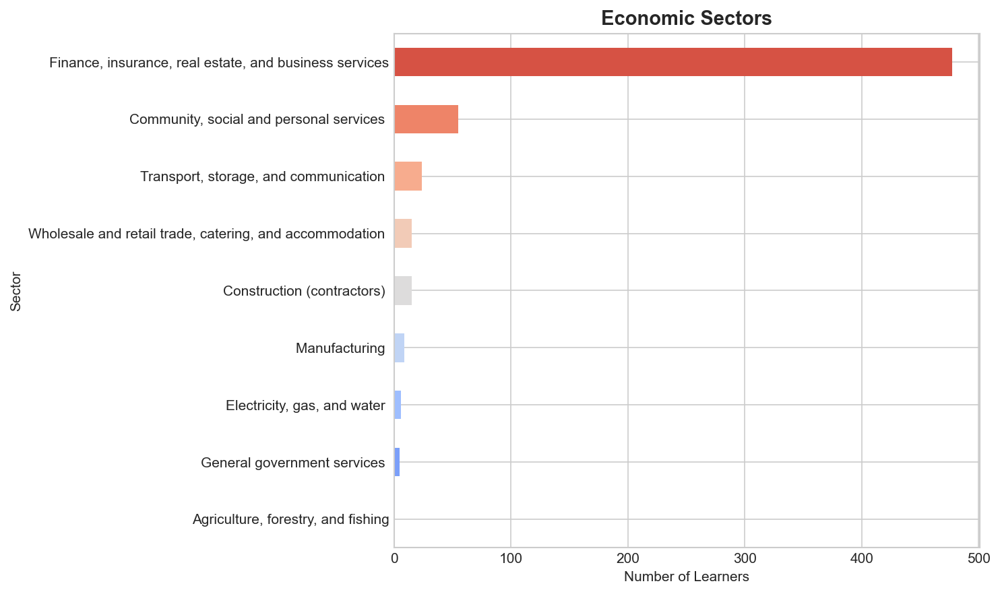
| Rank | Sector | Learners |
|---|---|---|
| 1 | Finance, insurance, real estate, and business services | 477 |
| 2 | Community, social and personal services | 55 |
| 3 | Transport, storage, and communication | 24 |
| 4 | Wholesale and retail trade, catering, and accommodation | 15 |
| 5 | Construction (contractors) | 15 |
| 6 | Manufacturing | 9 |
| 7 | Electricity, gas, and water | 6 |
| 8 | General government services | 5 |
| 9 | Agriculture, forestry, and fishing | 1 |
Gender Distribution
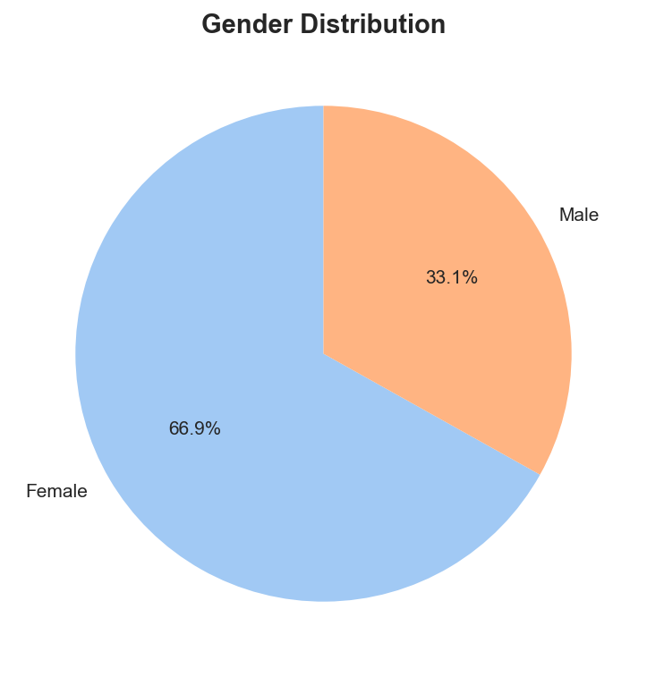
| Gender | Count | % |
|---|---|---|
| Female | 406 | 66.9% |
| Male | 201 | 33.1% |
Household Language Distribution
| Language | Count | Percentage |
|---|---|---|
| isiZulu | 474 | 78.1% |
| English | 30 | 4.9% |
| isiXhosa | 26 | 4.3% |
| Tshivenda | 21 | 3.5% |
| Xitsonga | 20 | 3.3% |
| Sepedi | 13 | 2.1% |
| Setswana | 11 | 1.8% |
| Sesotho | 11 | 1.8% |
| siSwati | 1 | 0.2% |
Disability Types
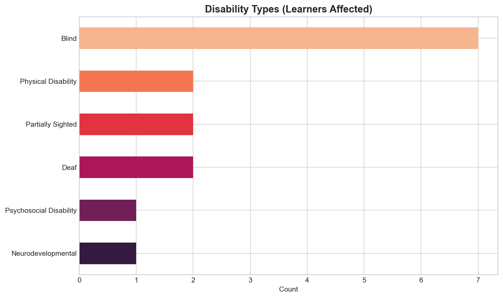
| Disability Type | Affected Learners |
|---|---|
| Blind | 7 |
| Partially Sighted | 2 |
| Deaf | 2 |
| Neurodevelopmental | 1 |
| Psychosocial Disability | 1 |
| Physical Disability | 2 |
Metro and Rural Classification
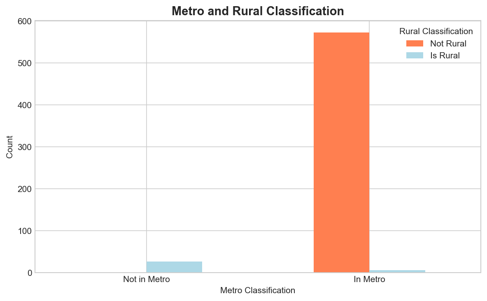
| Metro / Rural | Not Rural | Is Rural |
|---|---|---|
| Not in Metro | 1 | 27 |
| In Metro | 573 | 6 |
Reasons for Leaving the Programme
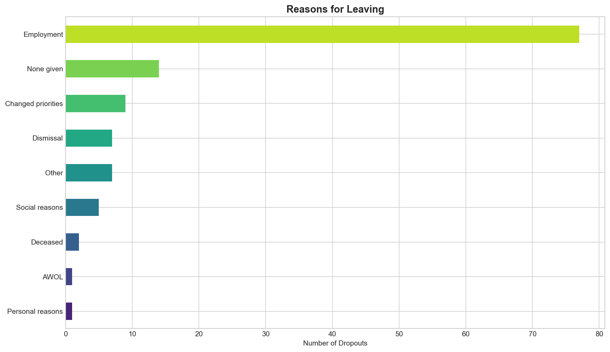
| Rank | Reason | Count | Percentage |
|---|---|---|---|
| 1 | Employment | 77 | 62.6% |
| 2 | None given | 14 | 11.4% |
| 3 | Changed priorities | 9 | 7.3% |
| 4 | Dismissal | 7 | 5.7% |
| 5 | Other | 7 | 5.7% |
| 6 | Social reasons | 5 | 4.1% |
| 7 | Deceased | 2 | 1.6% |
| 8 | Personal reasons | 1 | 0.8% |
| 9 | AWOL | 1 | 0.8% |
Dropouts by Year
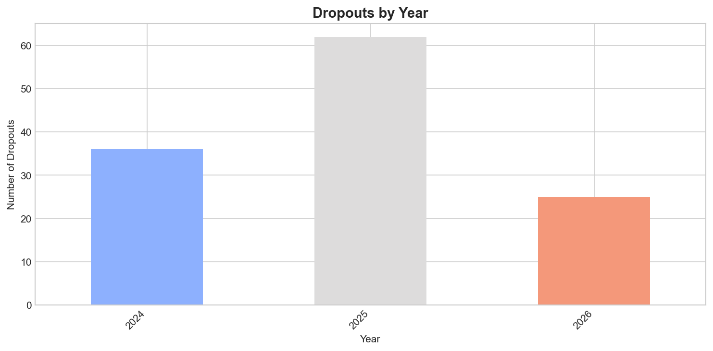
| Year | Count |
|---|---|
| 2024 | 36 |
| 2025 | 62 |
| 2026 | 25 |
Dropouts by Month
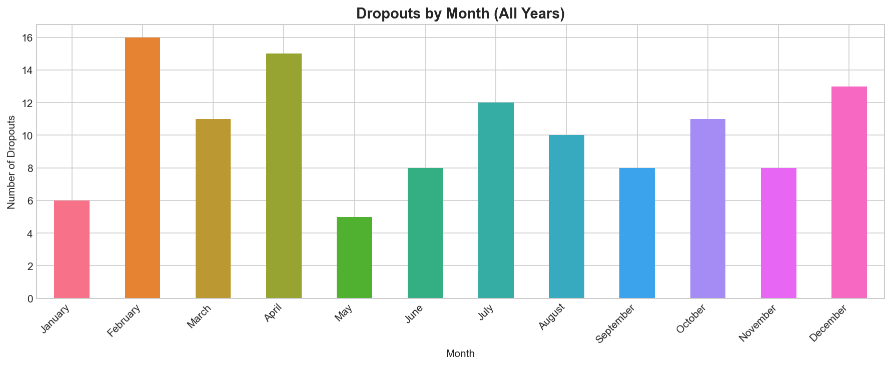
| Month | Count |
|---|---|
| January | 6 |
| February | 16 |
| March | 11 |
| April | 15 |
| May | 5 |
| June | 8 |
| July | 12 |
| August | 10 |
| September | 8 |
| October | 11 |
| November | 8 |
| December | 13 |
Dropouts Over Time
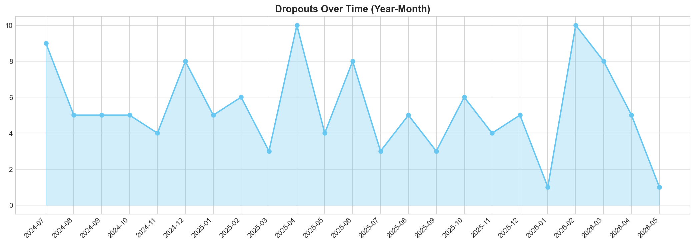
Departure Information Coverage
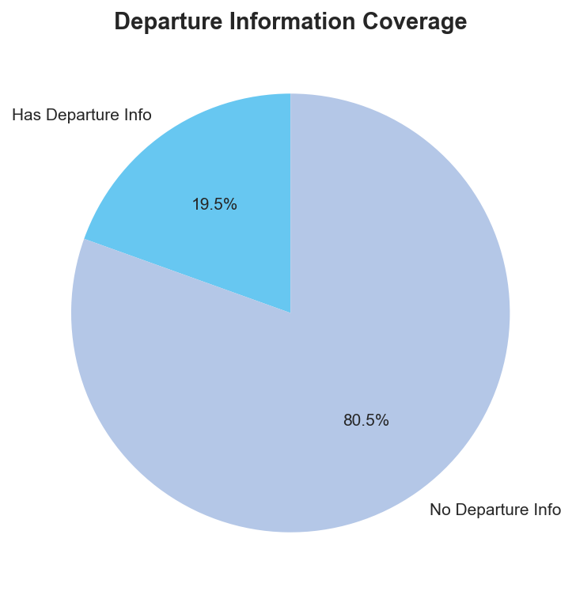